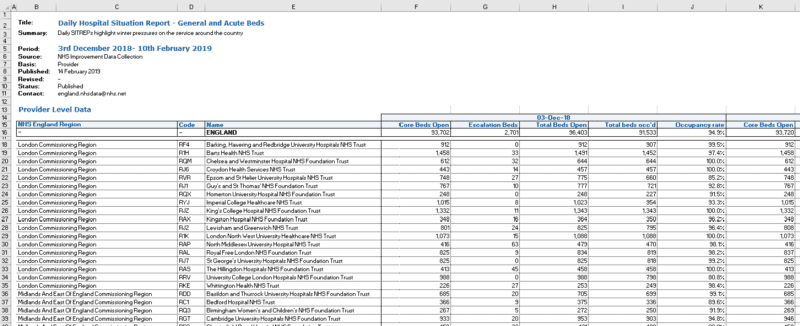
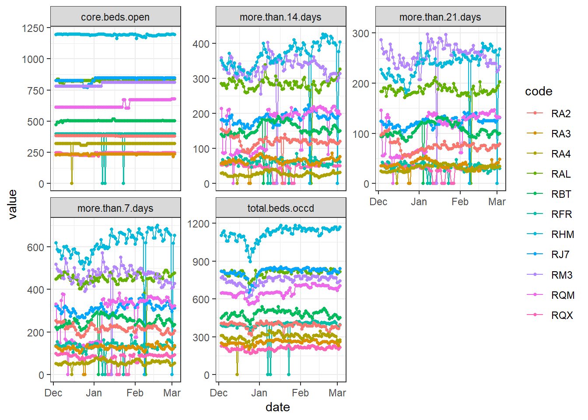
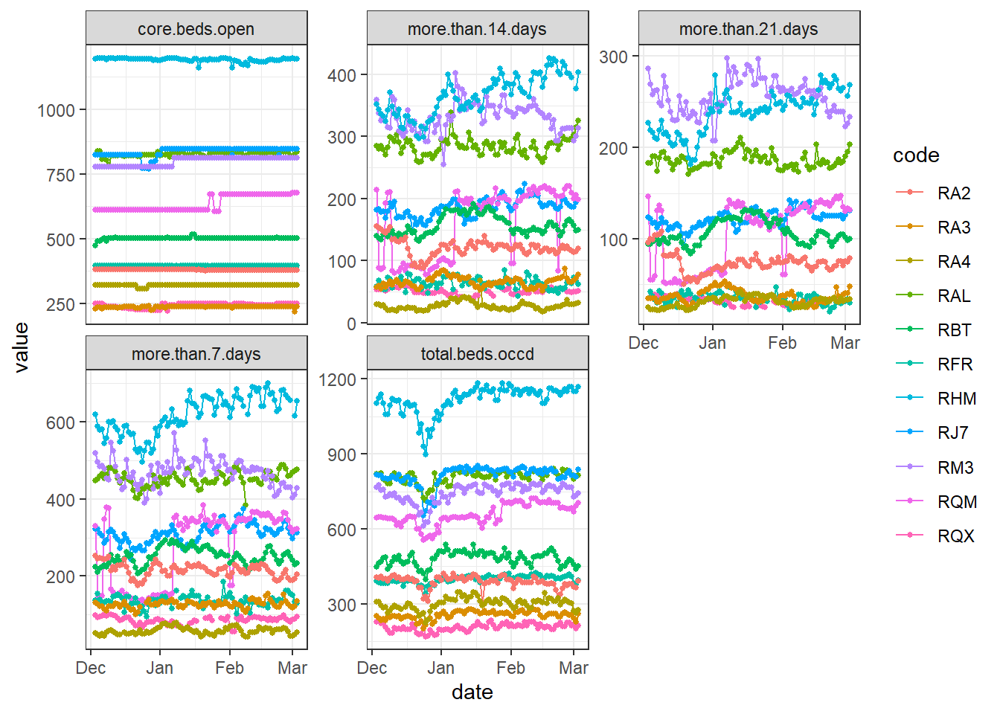
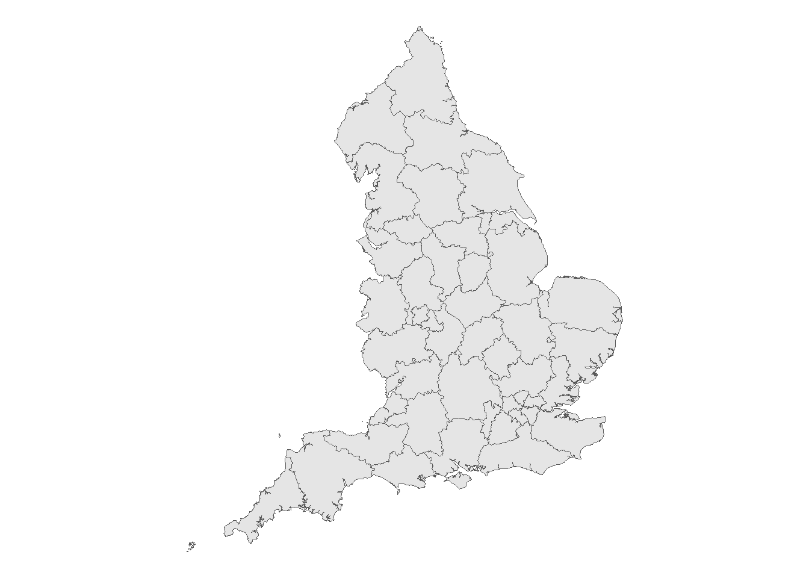
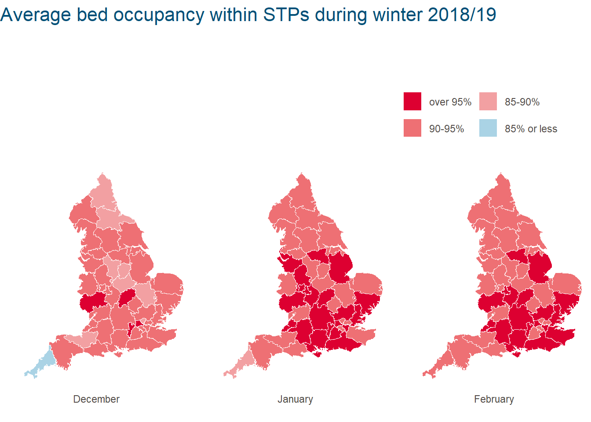

# Download file
filename <- "Winter-data-timeseries-20190307.xlsx"
url <- "https://www.england.nhs.uk/statistics/wp-content/uploads/sites/2/2019/03/Winter-data-timeseries-20190307.xlsx"
download.file(url, destfile = filename, mode = "wb")Every Thursday during winter, roughly from December to March, NHS Digital releases a week’s worth of hospital performance data, known as the Daily Situation Reports. This data often receives media attention because cold weather and seasonal illnesses can lead to higher demand for hospital care, meaning that services might be under increased pressure. At the Health Foundation, one of our aims is to provide new insight into the quality of health care through in-depth analysis of policy and data. So, to understand more about the current demand for hospital care and the challenges the NHS is facing, we keep a close eye on the latest seasonal trends.
Keeping on top of NHS winter indicators has the potential to keep us analysts busy. The raw data is published in a fairly complex spreadsheet, requires a decent amount of cleaning and needs to be reanalysed after every release. In addition to monitoring national figures, this winter our team at the Health Foundation also wanted to see if there might be any variation between different areas of England. Sustainability and transformation partnerships (STPs) are areas where health and care leaders develop shared proposals for local services. Therefore, we enriched the raw data with information about where hospitals are located, and which STP they belong to. But with a similar analytical approach, more fine-grained local structures (such as Clinical Commissioning Groups) could be used.
Original link to STPs page has moved. Original link shared https://www.england.nhs.uk/integratedcare/stps/view-stps/
For a more efficient and reproducible way of tracking NHS winter indicators this year, we moved to our whole analysis pipeline to R. We then used the clean data for visualisations in R and other applications, like Tableau. This blog takes you through our analysis workflow and describes how we got through some tricky steps. The complete R script is also available on GitHub, if you want to give it a go yourself. You can also read a blog on the Health Foundation’s website to find out why we looked at local areas this year and what we found.
Original link to GitHub has been moved. Originally shared https://github.com/fiona-grimm/NHS_winter_pressures. Could be https://github.com/HFAnalyticsLab/Winter_pressures
Why write this blog on data analysis?
Analysts at many other local and national organisations are interested in NHS winter performance data. In order for this blog to be a good resource for them, we plan to:
- share our own analytical approach and R code
- illustrate how and why we made certain analytical decisions and
- discuss what we learned along the way, both about the data and R.
We hope that this blog will inspire others to do the same, and to share their code too. Here, we won’t try to interpret any regional differences in winter performance. We know that there are several factors involved, so we will leave this up to others with more local knowledge.
1. R packages we used
The {tidyverse} collection of R packages is a useful set of tools for data analysis and visualisation that are designed to work together. It contains the {ggplot} package, which we use for visualisations.
(Need help getting started with R and the {tidyverse}? Try the R for Data Science website).
We use a function from the {readxl} package to import Excel files and the {lubridate} package, which makes working with dates a lot easier. Both are part of the {tidyverse}.
Note: if you would like to run this code in your own R session and you haven’t installed these packages already, you will need to do so (once) using the install.packages() function.
2. Data download from NHS Digital
After setting up the tools, we downloaded Winter Daily SitRep 2018–19 Data from the NHS Digital website. Rather than opting for the spreadsheets that contain one week of data each, we went for the more convenient time series file, which contains all data from this winter up to the latest release. One drawback is that the name of this file changes weekly as new data is added (so, should you try to use this code at a later date, you will probably have to adapt the file name).
Response [https://www.england.nhs.uk/statistics/wp-content/uploads/sites/2/2019/03/Winter-data-timeseries-20190307.xlsx]
Date: 2025-06-23 12:47
Status: 200
Content-Type: application/vnd.openxmlformats-officedocument.spreadsheetml.sheet
Size: 1.51 MB
<ON DISK> C:\Users\THOMAS~1.JEM\AppData\Local\Temp\Rtmpe2ltDH\file389ce42d6a.xlsx3. Data import from R-unfriendly spreadsheets
How we tackled multi-line headers with merged cells
Once we opened the file in Excel, we saw a number of sheets containing different indicators. With a few exceptions, most have a similar table structure. As we were interested in patient flow through hospitals, we focused on ‘General and acute beds’ and ’Beds occupied by long-stay patients’ for now.
What the sheets with these indicators had in common was that there was metadata in the first 13 lines followed by a two-line header. Several columns containing variables (second header line) were grouped within dates (first header line) and the cells around the dates were merged. There were also some empty columns and rows, which we addressed later on.

Unfortunately, this was not yet a tidy table, as the dates that served as column headers were values, not variable names. All this made importing the file into R slightly more challenging. We fixed this by creating a custom import_sitrep() function that would:
- read and store the data and the two lines of the header separately,
- combine the two lines of the header,
- add the combined header to the data and tidy up column names by removing special characters,
- and finally convert the table into a tidy table ready for the next step.
But wait, there was one more tricky bit. What happened when we tried to read in the headers one by one?
example_indicator <- "G&A beds"
# First line contains dates in merged cells (5 cells merged each in this case)
header_1 <- read_xlsx(
path = filename,
sheet = example_indicator,
skip = 13,
col_names = FALSE,
n_max = 1
)
# Second line contains variable names
header_2 <- read_xlsx(
path = filename,
sheet = example_indicator,
skip = 14,
col_names = FALSE,
n_max = 1
)
dim(header_1)
# [1] 1 451
dim(header_2)
# [1] 1 459
# why is header_1 eight columns shorter than header_2?
# Start of header 1
header_1[1:10]
# # A tibble: 1 x 10
# X__1 X__2 X__3 X__4 X__5 X__6 X__7 X__8 X__9 X__10
# <dttm> <lgl> <lgl> <lgl> <lgl> <dttm> <lgl> <lgl> <lgl> <lgl>
# 1 2018-12-03 00:00:00 NA NA NA NA 2018-12-04 00:00:00 NA NA NA NA
# starts with the date column, we lost the few columns that contain trust code, name and so on. in line 2
# End of header 1
header_1[(ncol(header_1) - 10):ncol(header_1)]
# # A tibble: 1 x 11
# X__441 X__442 X__443 X__444 X__445 X__446 X__447 X__448 X__449 X__450 X__451
# <dttm> <lgl> <lgl> <lgl> <lgl> <dttm> <lgl> <lgl> <lgl> <lgl> <dttm>
# 1 2019-03-01 00:00:00 NA NA NA NA 2019-03-02 00:00:00 NA NA NA NA 2019-03-03 00:00:00
# ends with only one column for 3 March - we lost the last four columns containing NASigh… they ended up not having the same length. The first header line (containing the dates) was 8 elements shorter. Looking at its left and right side (see above) gave us a hint as to why this might have happened:
- In the Excel sheet, the first few cells in this line were empty and when the line was read in, they were converted to NA. The
read_xlsx()function then discarded these empty columns (probably) because they were at the beginning. - There were also some merged cells. During import they were separated and, if empty, converted to NA. Empty columns at the end of the header line also seem to be discarded by
read_xlsx().
So, we needed to find a way to preserve the length of the first header line in our import_sitrep() function. This is how we solved it:
import_sitrep <- function(file, indicator) {
data <- read_xlsx(path = file, sheet = indicator, skip = 15, col_names = FALSE)
# Extract first header line containing dates and fill the gaps:
# Read 2 lines but guess the data types only from the first row
# Based on the first line, the function expects dates and
# convert the second row to NA
# As a result, the right length is preserved.
header_1 <- read_xlsx(path = file, sheet = indicator, skip = 13, col_names = FALSE, n_max = 2, guess_max = 1)
# Convert to columns, fill in the gaps and convert into vector
header_1 <- header_1 %>%
t() %>%
as.data.frame() %>%
fill(., "V1")
header_1 <- as.character(header_1$V1)
# Extract second header and convert into vector
header_2 <- read_xlsx(path = file, sheet = indicator, skip = 14, col_names = FALSE, n_max = 1)
header_2 <- unname(unlist(header_2[1, ]))
# Concatenating headers to create column names
# Replace NAs with a placeholder, otherwise concatenation fails
column_names <- str_c(str_replace_na(header_1, "placeholder"), str_replace_na(header_2, "placeholder"), sep = "_")
# Add column names to data and tidy
names(data) <- tolower(column_names)
names(data) <- gsub(" ", ".", names(data))
names(data) <- gsub("placeholder_", "", names(data))
names(data) <- gsub("'", "", names(data))
names(data) <- gsub("<", "less.than", names(data))
names(data) <- gsub(">", "more.than", names(data))
# Tidy up table
data_tidy <- data %>%
# remove empty column and line
select(-placeholder) %>%
filter(!is.na(name)) %>%
# Separate variables and dates
gather(-1, -2, -3, key = "date_type", value = "value") %>%
separate(date_type, into = c("date", "type"), sep = "_") %>%
spread(key = "type", value = "value") %>%
# convert to the right variable types
mutate(date = as.Date(date)) %>%
mutate_at(vars(5:ncol(.)), funs(as.numeric))
data_tidy
}Now that we had our import function, we were ready to read and combine the sheets containing the winter indicators ‘General and acute beds’ and ‘Beds occupied by long-stay patients’.
# What does our data look like now?
dim(Sitrep_daily)
# [1] 12285 12
head(Sitrep_daily)
# # A tibble: 6 x 12
# nhs.england.reg~ code name date core.beds.open escalation.beds~ occupancy.rate total.beds.occd total.beds.open
# <chr> <chr> <chr> <date> <dbl> <dbl> <dbl> <dbl> <dbl>
# 1 - - ENGL~ 2018-12-03 93702 2701 0.949 91533 96403
# 2 - - ENGL~ 2018-12-04 93720 2556 0.949 91322 96276
# 3 - - ENGL~ 2018-12-05 93739 2434 0.948 91143 96173
# 4 - - ENGL~ 2018-12-06 93617 2389 0.946 90862 96006
# 5 - - ENGL~ 2018-12-07 93822 2084 0.931 89333 95906
# 6 - - ENGL~ 2018-12-08 93635 2191 0.929 89021 95826
# # ... with 3 more variables: more.than.14.days <dbl>, more.than.21.days <dbl>, more.than.7.days <dbl>The data was now tidy, as each variable formed a column and each observation formed a row. Note that the observations for England in the table were followed by values for individual hospital trusts.
4. Data cleaning
Trust exclusions
We excluded the three children’s hospitals when calculating aggregate measures, such as the average bed occupancy within STPs. Our reasoning was that their patient profiles would be different from other acute trusts and this might skew the averages. Nevertheless, we kept track of them at a trust level.
This applies to Birmingham Women’s and Children’s NHS Foundation Trust (code RQ3), Alder Hey Children’s NHS Foundation Trust (RBS) and Sheffield Children’s NHS Foundation Trust (RCU).
trusts_to_exclude_for_aggregation <- c("RQ3", "RBS", "RCU")How we approached defining ‘missingness’: when is a zero not a zero?
Data collection and validation errors do happen, so finding suspicious data points is an important step during data cleaning.
While this is easy if a value is missing (or NA), it’s much harder to decide whether a zero truly represents ‘zero events’ or a missing value (in fact, it could even be both within the same data set). To distinguish between the two, at the Health Foundation we came up with the following criteria:
- How likely is a ‘zero event’ for an indicator? For example, when counting beds in a large hospital the likelihood of having zero open seems small, but when counting long-stay patients having none seems possible.
- How consistent is the zero value, in that trust, over time? Or in plain English: does the value jump from a higher number to zero (and back) or is it hovering somewhere close to zero.
The next two sections describe how we found and dealt with these missing values.
Finding longer periods of missing data
If any hospital trust had missing values, in any indicator, on 4 or more consecutive days during the reporting period, it was excluded from the analysis. We were only looking for these periods in variables where we would not expect any zeros (the list is shown as cols_to_check).
Why this particular cut-off? We wanted to aggregate the data and calculating weekly averages did not seem justified if we were missing more than half of a week for any trust.
Here’s how we summed up how many consecutive days were zero or NA within each trust/variable combination:
# Only check variables that are not derived from other variables
cols_to_check <- c(
"core.beds.open", "total.beds.occd",
"more.than.7.days", "more.than.14.days", "more.than.21.days"
)
# Find values that are 0 or NA
# within any trust/variable combination
Sitrep_missing_or_zero <- Sitrep_daily %>%
filter(name != "ENGLAND") %>%
# Updated code from `gather(cols_to_check, key = "variable", value = "value") %>%`
pivot_longer(
cols = cols_to_check,
names_to = "variable",
values_to = "value"
) %>%
filter(value == 0 | is.na(value)) %>%
# Sort and assign a period ID to consecutive days
arrange(code, variable, date) %>%
group_by(code, variable) %>%
mutate(
diff = c(0, diff(date)),
periodID = 1 + cumsum(diff > 1)
)
# Summarise consecutive days that variables are missing
Days_missing <- Sitrep_missing_or_zero %>%
# remove trusts we already decided to exclude
filter(!is.element(code, trusts_to_exclude_for_aggregation)) %>%
group_by(code, variable, periodID) %>%
summarise(days = as.numeric((last(date) - first(date) + 1))) %>%
arrange(desc(days))print(Days_missing[Days_missing$days >= 4, ])
# # A tibble: 11 x 4
# # Groups: code, variable [11]
# code variable periodID days
# <chr> <chr> <dbl> <dbl>
# 1 RTD more.than.14.days 1 85
# 2 RTD more.than.21.days 1 85
# 3 RTD more.than.7.days 1 85
# 4 RQW more.than.14.days 1 8
# 5 RQW more.than.21.days 1 8
# 6 RQW more.than.7.days 1 8
# 7 RQW total.beds.occd 1 8
# 8 RQW core.beds.open 1 7
# 9 RAX more.than.14.days 1 6
# 10 RAX more.than.21.days 1 6
# 11 RAX more.than.7.days 1 6When we filtered for 4 or more consecutive days, we found that:
- The trust with the code RTD reported zero long-stay patients (of any length of stay) for the whole reporting period to date, which seemed unrealistic for a general and acute hospital.
- Trust RQW had a gap of 7–8 days, that coincided for the indicators shown (we checked this separately in the raw data).
- Trust RAX reported zero long-stay patients (of any length of stay) for 6 days during January, but reported a high number before and after.
Based on this, all variables from the trusts RTD, RQW and RAX were excluded from the analysis of this year’s (2018/19) winter data. This left us with 128 out of 134 trusts.
It’s worth noting that with this data-driven approach different trusts might be excluded each year and the number of excluded trusts could change over the winter period as new ‘gaps’ appear. Keep this in mind when making comparisons, both throughout the winter period and between years.
trusts_to_exclude <- Days_missing %>%
filter(days >= 4) %>%
ungroup() %>%
# Extract column as vector
pull(code) %>%
unique()
print(trusts_to_exclude)[1] "RTD" "RQW" "RAX"# [1] "RTD" "RQW" "RAX"
Sitrep_daily <- Sitrep_daily %>%
filter(!is.element(code, trusts_to_exclude))
dim(Sitrep_daily)[1] 12012 12# [1] 12012 12Dealing with shorter data gaps
Next, we checked how many missing or zero values were left:
# How many 1,2 and 3-day gaps are there?
Days_missing %>%
filter(!is.element(code, trusts_to_exclude)) %>%
group_by(days) %>%
count()
# # A tibble: 3 x 2
# # Groups: days [3]
# days n
# <dbl> <int>
# 1 1 42
# 2 2 3
# 3 3 9
# How are they distributed between trusts and variables?
Days_missing %>%
filter(!is.element(code, trusts_to_exclude)) %>%
group_by(code, variable) %>%
count() %>%
spread(key = "variable", value = "n")
# # A tibble: 11 x 6
# # Groups: code [11]
# code core.beds.open more.than.14.days more.than.21.days more.than.7.days total.beds.occd
# <chr> <int> <int> <int> <int> <int>
# 1 RA2 NA 1 NA NA NA
# 2 RA3 NA 1 1 1 NA
# 3 RA4 1 1 1 1 1
# 4 RAL NA 1 1 1 NA
# 5 RBT NA 1 1 1 NA
# 6 RFR 3 3 3 3 3
# 7 RHM NA 2 2 2 NA
# 8 RJ7 NA 1 1 1 NA
# 9 RM3 NA 1 1 1 NA
# 10 RQM NA 1 1 1 NA
# 11 RQX NA 3 3 3 NAMost of the remaining gaps (42 out of 54) consisted of only a single day and they were mostly found in variables relating to long-stay patients. To judge whether these looked like real ‘zero events’ or were more likely to be reporting errors, we had a closer look at the data:
# Extract and plot trusts with zeros in their data.
Sitrep_daily_small_gaps <- Sitrep_daily %>%
select(code, date, cols_to_check) %>%
filter(code %in% Days_missing$code & !is.element(code, trusts_to_exclude)) %>%
gather(cols_to_check, key = "variable", value = "value")
ggplot(Sitrep_daily_small_gaps, aes(x = date, y = value, group = code, color = code)) +
theme_bw() +
geom_line() +
geom_point(size = 1) +
facet_wrap("variable", scales = "free_y")
Based on the data before and after the zeroes, these were unlikely to be true values. It would have been possible to impute these gaps in some way, for example by taking the mean of day before and the day after. Instead, we took the approach that required fewest assumptions and we just replaced the gaps with NA:
##### Original code (base R) gives error "Error in `na_if()`:! Can't convert `y` <double> to match type of `x` <tbl_df>."
# Create a 'clean' version where 0s were replaced with NA
# Sitrep_daily[cols_to_check] <- na_if(Sitrep_daily[cols_to_check], 0)# Coded to na using {tidyverse} functions and then plotted
Sitrep_daily_na <- Sitrep_daily |>
mutate(across(where(is.numeric), ~ na_if(., 0)))
Sitrep_daily_na <- Sitrep_daily_na %>%
select(code, date, cols_to_check) %>%
filter(code %in% Days_missing$code & !is.element(code, trusts_to_exclude)) %>%
gather(cols_to_check, key = "variable", value = "value")
ggplot(Sitrep_daily_na, aes(x = date, y = value, group = code, color = code)) +
theme_bw() +
geom_line() +
geom_point(size = 1) +
facet_wrap("variable", scales = "free_y")
Validating derived variables
Some variables present in the data set were derived from others: for example,total.beds.occd should be the sum of core.beds.open and escalation.beds.open.
We could have discarded derived variables straight away and then computed them ourselves, in order to be completely sure about how they have been derived and what they mean. Since we were curious about their quality, we first checked if total.beds.open and occupancy.rate had been calculated as expected so we could decide whether or not to replace them (spoiler: yes, we did).
Sitrep_daily <- Sitrep_daily %>%
mutate(
total.beds.open.check = core.beds.open + escalation.beds.open,
occupancy.rate.check = total.beds.occd / (core.beds.open + escalation.beds.open)
)# Are the newly derives values the same as the existing ones?
all(round(Sitrep_daily$occupancy.rate, 6) == round(Sitrep_daily$occupancy.rate.check, 6))
# FALSE
all(Sitrep_daily$total.beds.open == Sitrep_daily$total.beds.open.check)
# FALSE
# Where are the mismatches?
Sitrep_daily[
Sitrep_daily$total.beds.open != Sitrep_daily$total.beds.open.check,
c(
"code", "date", "core.beds.open", "escalation.beds.open", "total.beds.open",
"total.beds.open.check"
)
]
# A tibble: 5 x 6
# code date core.beds.open escalation.beds.open total.beds.open total.beds.open.check
# <chr> <date> <dbl> <dbl> <dbl> <dbl>
# 1 - 2018-12-16 93489 2125 95604 95614
# 2 - 2018-12-30 93014 2475 95104 95489
# 3 - 2019-02-08 93931 3718 97080 97649
# 4 R1H 2019-02-08 1270 80 781 1350
# 5 RXK 2018-12-16 587 22 599 609# Looks like we will have to re-derive both variables after all
Sitrep_daily <- Sitrep_daily %>%
mutate(
total.beds.open = core.beds.open + escalation.beds.open,
occupancy.rate = total.beds.occd / (core.beds.open + escalation.beds.open)
)Similarly, if it had been the focus of our analysis, we would also have re-derived national aggregates for England.
5. Feature engineering
Adding organisational information on sustainability and transformation partnerships (STPs)
As we wanted to compare indicators between local areas, we decided to calculate averages of winter indicators over hospital trusts within each STP. To do this, we needed to add variables to the raw data that indicated which hospital trust belonged to which STP. Unfortunately, we were not aware that this information was available in a format convenient for data analysis.
So, we manually created and validated a lookup table to map hospital trusts to STPs, using information related to the 2017/18 formation of 44 STPs from NHS England. While some STPs have since changed (for example, three STPs in the north of England merged in August 2018), this was the latest and most comprehensive information available, as far as we are aware.
The allocation of most hospital trusts to STPs was straightforward using this list, but there were a few instances where we had to choose:
- If a trust did not appear in any STP list, it was matched according to the location of its main acute site. This was the case for four trusts in Northumberland, Tyne and Wear and North Durham STP.
- If a trust was mentioned in more than one STP plan, it was allocated according to the location of its main acute site. This applied to both Chesterfield Royal Hospital NHS Foundation Trust and Epsom And St Helier University Hospitals NHS Trust.
We think this is a reasonable approach when analysing winter indicators, which mainly come from acute trusts, but we would be keen to hear your feedback.
Once we had this lookup table, we imported it into R and merged it with the winter indicators:
STP_lookup <- read_csv("https://raw.githubusercontent.com/HFAnalyticsLab/Winter_pressures/85313135c7dee393f52fa47596f04eb390bc43a3/Trust-STP-lookup.csv")
# join by code only to avoid any problems due to inconsistencies in spelling
Sitrep_daily <- Sitrep_daily %>%
left_join(STP_lookup[c("code", "STP", "STP_code")], by = c("code"))The lookup table is also available on Github. Please note that STPs change and develop over time, so if you would like to use it, it’s worth checking that the information is up to date.
Making read-outs comparable between trusts: from raw counts to rates
As hospital trusts come in different sizes and serve different numbers of patients, raw patient counts are not suitable for comparisons between trusts or regions. Percentages or fractions, such bed occupancy rates, are more comparable.
Therefore, we derived the fraction of occupied beds, which are occupied by long-stay patients over 7, 14 or 21 days:
# rate of occupied beds that are occupied by long-stay patients
Sitrep_daily <- Sitrep_daily %>%
mutate(
more.than.7.rate = more.than.7.days / total.beds.occd,
more.than.14.rate = more.than.14.days / total.beds.occd,
more.than.21.rate = more.than.21.days / total.beds.occd
)6. Aggregation: monthly averages by STP
In some cases, it might be useful to visualise daily changes, but weekly or even monthly aggregates have the advantage of being less noisy, free of weekday-weekend variation and can potentially be more useful to monitor longer-term trends.
First, we created a new column that contained the corresponding month. The month was then used as grouping variable, along with the trust or STP code, to calculate monthly averages of bed occupancy and long-stay patient rates.
For weekly averages, an alternative would have been to create a new column containing the date of the respective beginning of the week using the cut() function (also shown below).
We know it’s also good practice to keep track of the number of valid observations (as in, not NA) that we average over within each group used. In this instance, for trust-level aggregates, this represented the number of days within a week. For STP-level aggregates, it corresponded to the number of trusts within the STP.
Sitrep_daily <- Sitrep_daily %>%
mutate(
week_start = as.Date(cut(date, breaks = "week", start.on.monday = TRUE)), # can be used to aggregate by week
month = format(date, format = "%B")
)
# Monthly average on trust level
Sitrep_monthly_average_bytrust <- Sitrep_daily %>%
group_by(nhs.england.region, code, name, STP, STP_code, month) %>%
# Count the number of valid observations for each variable
# BEFORE we overwrite the variables
summarize(
occupancy.rate.valid = sum(!is.na(occupancy.rate)),
more.than.7.rate.valid = sum(!is.na(more.than.7.rate)),
more.than.14.rate.valid = sum(!is.na(more.than.14.rate)),
more.than.21.rate.valid = sum(!is.na(more.than.21.rate)),
occupancy.rate = mean(occupancy.rate, na.rm = TRUE),
more.than.7.rate = mean(more.than.7.rate, na.rm = TRUE),
more.than.14.rate = mean(more.than.14.rate, na.rm = TRUE),
more.than.21.rate = mean(more.than.21.rate, na.rm = TRUE)
)
# Monthly average on STP level
Sitrep_monthly_average_bySTP <- Sitrep_monthly_average_bytrust %>%
filter(!is.element(code, trusts_to_exclude_for_aggregation)) %>%
group_by(STP, STP_code, month) %>%
summarise(
occupancy.rate.valid = sum(!is.na(occupancy.rate)),
more.than.7.rate.valid = sum(!is.na(more.than.7.rate)),
more.than.14.rate.valid = sum(!is.na(more.than.14.rate)),
more.than.21.rate.valid = sum(!is.na(more.than.21.rate)),
occupancy.rate = mean(occupancy.rate, na.rm = TRUE),
more.than.7.rate = mean(more.than.7.rate, na.rm = TRUE),
more.than.14.rate = mean(more.than.14.rate, na.rm = TRUE),
more.than.21.rate = mean(more.than.21.rate, na.rm = TRUE)
)At this point, we also saved the tidy and aggregated data as a CSV file for visualisation in other programs, such as Tableau.
7. Visualisation: how we mapped STP-level data in R
There are endless ways to creatively visualise aspects of this data (the R Graph Gallery is a great place to get inspired). We wanted to plot a map of STP boundaries and colour-shade them according to the average bed occupancy in each winter month.
STP boundaries are available as a GeoJSON file from the Office for National Statistics (ONS). We downloaded and imported the digital vector file and then created a plot to get a first idea of what was in the file:
GeoJSON data no longer available from data.gov
Original code provided the link cannot run as GeoJSON files no longer available from the data.gov site - only csv.
From the Open Geography portal url link can be generated from I want to use this link in bottom left then View API Resources which gives GeoJSON link.
To map the code was edited to {ggplot2} following R gallery examples
######### Original code not run - see call out box #############
# Download and read file containing STP shapes from the ONS website
# We use the smaller, generalised version for mapping rather than the full boundaries
# STP_geojson_filename <- "Sustainability_and_Transformation_Partnerships_February_2017_Ultra_Generalised_Clipped_Boundaries_in_England.geojson.json"
# STP_geojson_url <- "http://geoportal1-ons.opendata.arcgis.com/datasets/571bd4512165461fad70a0ccc36450e4_4.geojson"
#
# download.file(STP_geojson_url, STP_geojson_filename)
# data_json <- geojson_read(STP_geojson_filename, what = "sp")
#
# plot(data_json)tmp_geojson <- tempfile(fileext = ".geojson")
download.file(
"https://services1.arcgis.com/ESMARspQHYMw9BZ9/arcgis/rest/services/STP_Feb_2017_SGCB_in_England_2022/FeatureServer/0/query?outFields=*&where=1%3D1&f=geojson",
tmp_geojson
)
my_sf <- read_sf(tmp_geojson)
ggplot(my_sf) +
geom_sf() +
theme_void()
The cut() function provided a convenient way to divide the variable bed.occupancy into meaningful intervals and to add labels that could be displayed on the map. Converting variables into factors and ordering the factor levels using factor() ensured that the intervals and months were in the right order. We were then ready to plot and save the map:
STP_shape_monthly <- my_sf |>
left_join(Sitrep_monthly_average_bySTP, by = c("stp17cd" = "STP_code"))
STP_shape_monthly <- STP_shape_monthly %>%
# Divide variable into intervals and turn into factors
mutate(
occupancy.rate.cut = cut(occupancy.rate,
breaks = c(0, 0.85, 0.9, 0.95, 1),
labels = c("85% or less", "85-90%", "90-95%", "over 95%")
),
occupancy.rate.cut = factor(as.character(occupancy.rate.cut),
levels = rev(levels(occupancy.rate.cut))
)
) %>%
# Remove lines relating England as a whole
filter(!is.na(STP)) %>%
# Turn STPs and months into factors (ignoring March)
mutate(
id = factor(stp17cd,
levels = unique(stp17cd)
),
month = factor(month,
levels = c("December", "January", "February")
)
) %>%
filter(!is.na(month))
# Plot and save the map
ggplot(STP_shape_monthly, aes(
x = long,
y = lat,
fill = occupancy.rate.cut
)) +
geom_sf(colour = "white") +
# Remove grid lines
theme_void() +
# Ensure correct aspect ratio
coord_sf() +
# Facet by month
facet_grid(. ~ month, switch = "x") +
# Define colour palette
scale_fill_manual(values = c("#dd0031", "#ee7074", "#f2a0a2", "#aad3e5"), drop = FALSE) +
guides(fill = guide_legend(ncol = 2, byrow = FALSE, label.hjust = 0)) +
labs(title = "Average bed occupancy within STPs during winter 2018/19") +
# Other design choices
theme(
plot.title = element_text(size = 16, colour = "#005078", margin = margin(b = 15, unit = "mm")),
legend.justification = c(1, 0),
legend.key = element_blank(),
legend.margin = margin(t = 5, b = 5, l = 10, r = 10, unit = "mm"),
legend.text = element_text(colour = "#524c48"),
legend.title = element_blank(),
legend.position = "top",
legend.spacing.x = unit(10, "mm"),
legend.spacing.y = unit(10, "mm"),
strip.text = element_text(colour = "#524c48", margin = margin(b = 10))
)
How could we have improved this map further? One option might have been to interactively display STP averages when hovering over the map using the {plotly} package, for example.
8. What have we learned?
Lots! No, seriously… Using this workflow, rather than copy and paste, has saved us a lot of time this winter. But beyond that, creating (then revisiting and improving) this workflow turned out to be a great way to work together and to make our analysis more transparent, more reproducible and easier to understand.
Key points we are taking away:
- With trusts, CCGs, STPs, ICSs, and more to choose from when we’re looking at local variation within health care systems, it can be challenging to pick the right organisational level. Local health care structures are also changing and evolving rapidly. We need to do more thinking about which level is most informative and compare different option, suggestions are welcome.
- Some cleaning is a must. Winter data has a quick turnaround and NHS Digital only perform minimal validation. However, compared to previous years, the 2018/19 winter data quality has markedly improved (you can use our code to check the improvement for yourself).
- But cleaning decisions impact interpretability. If the list of excluded trusts changes between years (based on how well they are reporting in any given year), this makes the data less comparable year-on-year.
- We’ll play it safe with derived variables. The effort of rederiving them ourselves was worth it for the peace of mind we got from knowing that they were calculated consistently and meant exactly what we thought they meant.
- Next winter, our future selves will be very happy to have our analysis nicely documented with code that is ready to go. It should even be easy to adapt the same workflow for other open NHS data sets (we’ll save this for another time).
Editor note: - Updating this blog from 2019 in 2024 required a number of changes to functions and packages but the code was easier to change and debug than to build from scratch, particularly for someone who isn’t familiar with any mapping or geospatial coding!
{tidyverse} was used in recoding where the original was sometimes in base R.
This blog has been formatted to remove Latin Abbreviations and edited for NHS-R Style and to ensure running of code in Quarto and to update deprecated functions.